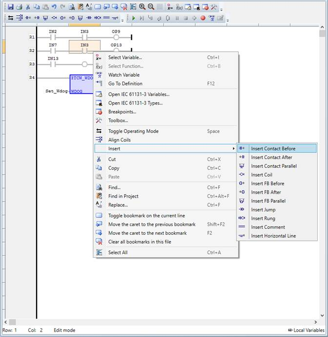

The Ladder Diagram is a graphical programming language that represents a set of connections between two rails with each connection being called a rung, where each rung is defined as an electrical circuit.
Each rung has a connection between logical checkers (contacts) and actuators (coils), and if a path can be traced from the input on the left of the rung to the output on the right, the output coil is energized, otherwise it is de-energized.
Ladder logic has contacts that make or break circuits to control coils.
Each rung of ladder language typically has one coil at the far right.
— ( )— A regular coil, energized whenever its rung is closed.
—[ ]— A regular contact, closed whenever its corresponding coil or an input which controls it
The "coil" (output of a rung) may represent a physical output which operates some device connected to the controller, or may represent an internal storage bit for use elsewhere in the program.
Double-clicking on a contact or a coil displays a dialog for selecting the input/output for the element.
Double-clicking on a function/function block displays a dialog for selecting the function/functional block for the element.
The editor contents can be zoomed in and out via the toolbar buttons, or using the shortcut combinations "Ctrl +" for zoom in and "Ctrl –" for zoom out.
The LD editor context menu has the following functionality:
|
Menu Item |
Action |
|
Select variable |
Displays a dialog for inserting/selecting a variable |
|
Select function |
Displays a dialog for inserting/selecting function block |
|
Watch Variable |
Add selected variable to Watch Variables Tool for monitoring |
|
Go To Definition |
Open Variables editor and navigate to the selected variable |
|
Open IEC 61131-3 variables |
Open the IEC variables tool |
|
Open IEC 61131-3 types |
Open the IEC types tool |
|
Breakpoints |
Open breakpoints manager window |
|
Toolbox |
Open toolbox control, from where using drag and drop functions and function blocks can be added to the program |
|
Toggle Operating Mode |
Switch between different operating modes for the selected coil or contact. See contacts and coils in the language reference. |
|
Align coils |
Align the coils in program |
|
Insert contact before |
Inserts a contact before the selection. See contacts in the language reference. |
|
Insert contact after |
Inserts a contact after the selection. See contacts in the language reference. |
|
Insert contact parallel |
Inserts a contact parallel to the selection. See contacts in the language reference. |
|
Insert coil |
Inserts new coil. See coils in the language reference. |
|
Insert FB before |
Inserts a new function block before selection |
|
Insert FB after |
Inserts a new function block after selection |
|
Insert FB parallel |
Inserts a new function block parallel to selection |
|
Insert Jump |
Inserts a new jump |
|
Insert Rung |
Inserts a new rung |
|
Insert comment |
Inserts a new comment |
|
Insert horizontal line |
Inserts a new horizontal line |
